1072D10 modular inlet manifold - r+r
- Path
- Procedures > 10 ENGINE > 1072 INLET AND EXHAUST MANIFOLDS > 1072D modular inlet manifold (v.i.s.) > 1072D10 modular inlet manifold - r+r
- Kind
- repair procedure (removal / refitting; the operation number is the code)
- Applies to
- engines: 1.8 TS, 2.0 JTS, 2.0 JTS; all production periods
- Interactive page
- https://sloeber94.github.io/elrnDB-a156/en/#/3237701
Applies to: engines: 1.8 TS; all production periods
 Removing
Removing
 Refitting
RefittingPosition the vehicle on the ramp.
Disconnect the battery negative (-) terminal.
 | Name | Connector |
|---|---|---|
- | Battery |
1016A40 ignition coil cover on cylinder head- r+r
1048A34 sleeve(s) from flow meter to air supply capacity case - r + r
1. Disconnect electrical connections (1a) and (1b) from the injection-ignition control unit.
| Name | Connector |
|---|---|---|
1a | Engine management ECU |
| Name | Connector |
|---|---|---|
1b | Engine management ECU |
2. Undo the bolt and disconnect the earth lead from the throttle body integral with M.D.S.
| Name | Connector |
|---|---|---|
2 | Throttle body actuator |
3. Disconnect the accelerator cable.
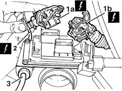
Applies to: engines: 1.8 TS; all production periods
1. Disconnect the electrical connection for the engine/front coupling wiring and release from the fastening on the modular intake manifold.
| Name | Connector |
|---|---|---|
1 | Front/engine connection |
2. Disconnect the vacuum intake pipe.
3. Disconnect the electrical connection for the rpm and timing sensor and release from the fastenings on the manifold.
| Name | Connector |
|---|---|---|
3 | Rpm sensor |
4. Disconnect the electrical connection for the knock sensor and release from the fastening on the manifold.
| Name | Connector |
|---|---|---|
4 | Detonation sensor - 1 |
5. Disconnect the electrical connection for the Lambda sensor release from the fastening on the manifold..
| Name | Connector |
|---|---|---|
5 | Lambda sensor |
6. Disconnect the oil vapour inlet pipes from the modular inlet manifold.
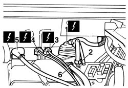
Applies to: engines: 1.8 TS; all production periods
Disconnect the coolant return hose from the thermostat from the cooant reservoir, and release from the plastic fastenings on the manifold.
1. Disconnect the fuel supply pipe from the single fuel manifold pipe.
Release the injector electrical wiring from the securing bands on the manifold.
2. Disconnect the fuel vapour recovery pipe joint and release from the fastenings on the manifold.
3. Disconnect the timing sensor electrical connection and release from the fastenings on the manifold.
| Name | Connector |
|---|---|---|
3 | Timing sensor |
4. Disconnect the modular intake manifold control actuator electrical connection.
| Name | Connector |
|---|---|---|
4 | Variable geometry control solenoid |
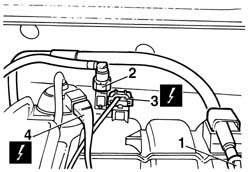
Applies to: engines: 1.8 TS; all production periods
Move the power steering fluid reservoir on the modular intake manifold.
Loosen the collars securing the modular intake manifold connection sleeves to the intake manifold.
7055B54 under-engine guard - r r
1076B50 exhaust pipe attachment to engine - r + r
Release the pipes and electrical wiring from the fastenings on the modular intake manifold and bracket.
Undo the fixing bolts and remove the modular inlet manifold bracket.
1. Undo both bolts and move the modular inlet manifold back as necessary.
2. Disconnect the electrical connection from the fuel vapour recovery solenoid.
| Name | Connector |
|---|---|---|
2 | Fuel vapour recovery solenoid |
3. Disconnect the electrical connection from the throtle body integrated with the M.D.S.
| Name | Connector |
|---|---|---|
3 | Throttle body actuator |
4. Remove the modular inlet manifold.
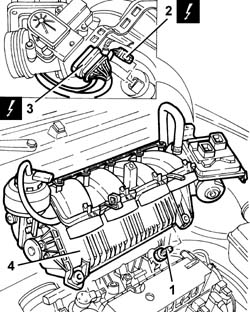
Applies to: engines: 1.8 TS; all production periods
Refitting
RemovingConnect the electrical connections to the integral throttle body and fuel vapour recovery solenoid. then replace the modular inlet manifold and secure with the bolts.
Fit the modular inlet manifold mounting bracket and fix it using the bolts.
Secure the electrical wires and pipes to the fastenings on the modular intake manifold.
1076B50 exhaust pipe attachment to engine - r + r
7055B54 under-engine guard - r r
Replace the power steering fluid reservoir and secure to the modular inlet manifold.
Tighten the collars securing the modular intake manifold connection sleeves to the intake manifold.
Connect the accelerator cable to the throttle body integral with the M.D.S. and adjust it (refer to op. 1068A30 accelerator control cable - r + r ).
Connect the earth lead to the throttle body integrated with the M.D.S. and bolt in place.
Connect the electrical connection to the modular inlet manifold actuator control actuator.
Connect the electrical connection to the timing sensor and secure.
Connect the fuel vapour recovery pipe junction and secure.
Connect the fuel supply hose and secure.
Replace the injector wiring and fit to the plastic fastenings.
Connect the coolant return pipe from the thermostat to the coolant reservoir.
Connect the oil vapour inlet pipe to the modular intake manifold.
Connect the electrical connection to the lambda probe and secure.
Connect the knock sensor electrical connection and secure.
Connect the electrical connection for the rpm and timing sensor.
Connect the vacuum intake pipe.
Connect the electrical connection for the engine/front coupling wiring and secure to the fastenings on the modular intake manifold.
Connect the electrical connections to the injection/ignition control unit.
1048A34 sleeve(s) from flow meter to air supply capacity case - r + r
1016A40 ignition coil cover on cylinder head- r+r
Connect the negative (-) battery terminal.
Remove the car from the ramp.
Applies to: engines: 2.0 JTS, 2.0 JTS; all production periods
Removing
RefittingPosition the vehicle on the ramp.
DRAIN THE FUEL HIGH-PRESSURE SYSTEM AS DESCRIBED BELOW.
Start the engine.
Maintain idle for 2 minutes.
Disconnect the fuel pump relay.
Wait for the engine to stall.
Try to start the engine: if the engine starts within 10 seconds, wait for it to stall, then try to start it again; if the engine does not start within 10 seconds, continue cranking for a further 5 seconds.
Wait for the engine to cool down.
Ensure that the ignition key is in the OFF position, then disconnect the negative battery terminal (-).
| Name | Connector |
|---|---|---|
- | Battery |
Proceed with removal 7055B54 under-engine guard - r r .
Proceed with removal 1076B18 rigid section of exhaust pipe between catalytic converter and silencer - r + r .
Proceed with removal 1016A40 ignition coil cover on cylinder head- r+r .
1. Undo bolts (1a) (1b) and remove the modular inlet manifold mounting bracket (1c) after releasing the wiring from the bands on the bracket.
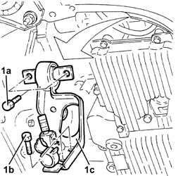
Applies to: engines: 2.0 JTS, 2.0 JTS; all production periods
Proceed with removal 5530B10 battery - r+r .
1. Loosen the band and disconnect the oil vapour recirculation pipe from the cam cover.
2. Loosen the band and disconnect the vacuum pipe from the corrugated sleeve.
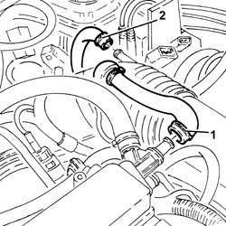
Applies to: engines: 2.0 JTS, 2.0 JTS; all production periods
1. Loosen bands (1a) and remove the rigid pipe (1b) with corrugated air intake sleeve (1c) from the air filter to the throttle body.
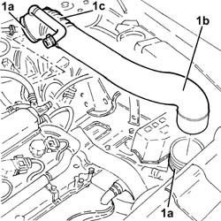
Applies to: engines: 2.0 JTS, 2.0 JTS; all production periods
1. Disconnect the electrical connection from the throttle body with D.V.L. and release the wiring from the fastening.
| Name | Connector |
|---|---|---|
1 | Throttle body actuator |
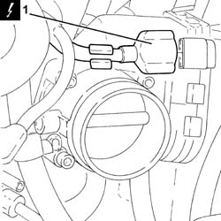
Applies to: engines: 2.0 JTS, 2.0 JTS; all production periods
1. Disconnect the electrical connection from the fuel pressure regulator.
| Name | Connector |
|---|---|---|
1 | Fuel pressure regulator |
2. Disconnect the electrical connection from the fuel pressure sensor.
| Name | Connector |
|---|---|---|
2 | Fuel pressure sensor |
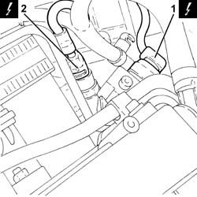
Applies to: engines: 2.0 JTS, 2.0 JTS; all production periods
1. Disconnect the electrical connection from the variable valve timing electromagnet.
| Name | Connector |
|---|---|---|
1 | Timing variator actuator |
2. Disconnect the electrical connection from the enablement solenoid of the changeover device actuator.
| Name | Connector |
|---|---|---|
2 | Variable geometry control solenoid |
3. Disconnect the electrical connection for the cam angle sensor.
| Name | Connector |
|---|---|---|
3 | Timing sensor |
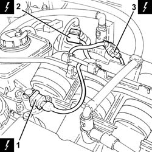
Applies to: engines: 2.0 JTS, 2.0 JTS; all production periods
1. Disconnect the electrical connections (1a) and (1b) for the engine wiring.
| Name | Connector |
|---|---|---|
1a | Front/engine connection |
| Name | Connector |
|---|---|---|
1b | Front/engine connection |
2. Loosen the band and disconnect the oil vapour recirculation pipe from the modular intake manifold.
3. Loosen the band and disconnect the vacuum pipe from the modular inlet manifold.
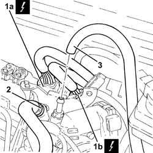
Applies to: engines: 2.0 JTS, 2.0 JTS; all production periods
1. Disconnect the rapid attachment for the fuel supply pipe and release it from the attachment on the module inlet manifold.
2. Disconnect the rapid attachment coupling for the fuel vapour recover pipe.
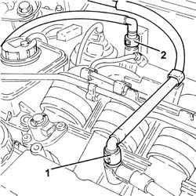
Applies to: engines: 2.0 JTS, 2.0 JTS; all production periods
1. Disconnect the vacuum intake pipe from the air flow switching device actuator and release it from the fastening.
2. Disconnect the linkage for the air flow switching cotrol actuator.
3. Undo the bolts (3a) and remove the air flow switching control actuator (3b).
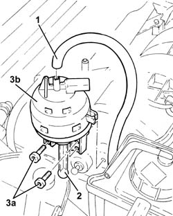
Applies to: engines: 2.0 JTS, 2.0 JTS; all production periods
1. Undo the bolts (1a) and move the power assisted steering fluid reservoir (1b) aside.
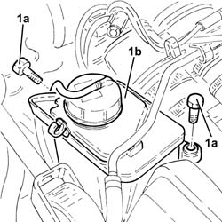
Applies to: engines: 2.0 JTS, 2.0 JTS; all production periods
1. Loosen the band and disconnect the flexible section from the rigid section of the coolant return pipe from the engine coolant supply reservoir.
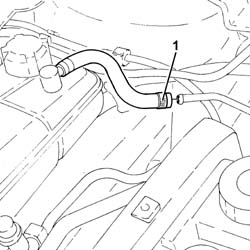
Applies to: engines: 2.0 JTS, 2.0 JTS; all production periods
1. Release the coolant return pipe to the coolant reservoir from the fastenings on the modular intake manifold and move it aside.
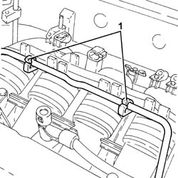
Applies to: engines: 2.0 JTS, 2.0 JTS; all production periods
1. Undo the bolts (1a) and remove the throttle body with integral D.V.L. (1b).
2. Remove the O-ring.
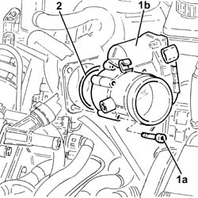
Applies to: engines: 2.0 JTS, 2.0 JTS; all production periods
1. Undo and remove the fuel pressure sensor.
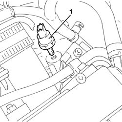
Applies to: engines: 2.0 JTS, 2.0 JTS; all production periods
Undo the bolts securing the bracket connecting the modular inlet manfiold to the inlet manifold, inlet manifold side.
1. Loosen the bands securing the inlet ducts, modular inlet manifold side.
2. Move the modular inlet manifold backwards, releasing it from the inlet ducts.
3. Loosen the remaining bands (3a) and remove the inlet ducts (3b).
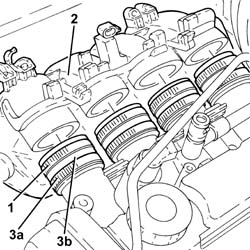
Applies to: engines: 2.0 JTS, 2.0 JTS; all production periods
Move the modular inlet manifold towards the ABS hydraulic unit.
1. Undo the bolts (1a) securing the bracket (1b) connecting the modular inlet manifold to the inlet manfold, modular inlet manifold side, and remove it.
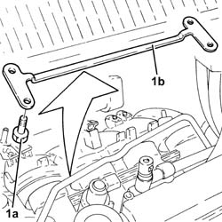
Applies to: engines: 2.0 JTS, 2.0 JTS; all production periods
1. Raise the modular inlet manifold as much as necessary to disconnect the electrical connection on the fuel vapour solenoid.
| Name | Connector |
|---|---|---|
1 | Fuel vapour recovery solenoid |
2. Remove the modular inlet manifold.
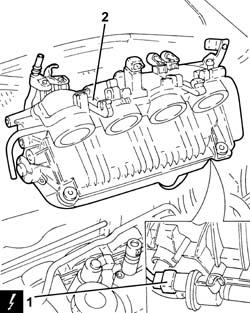
Applies to: engines: 2.0 JTS, 2.0 JTS; all production periods
Refitting
RemovingRefit the modular inlet manifold after connecting the electrical connection of the fuel vapour solenoid.
Refit the bracket connecting the modular inlet manfiold to the inlet manifold and secure it with the relevant bolts to the modular inlet manifold.
Refit the inlet ducts and secure them with the bands to the inlet manifold.
Refit the modular inlet manifold and connect it to the inlet ducts.
Tighten the inlet duct fixing bands, modular inlet manifold side.
Tighten the bolts securing the bracket connecting the modular inlet manifold to the inlet manifold, inlet manifold side.
1. Refit the fuel pressure sensor and tighten it to the specified torque.
 | Fastening | Component | Ø | Value (daNm) |
|---|---|---|---|---|
1 | - | FUEL PRESSURE SENSOR | M10 | 2.0 ÷ 2.4 |
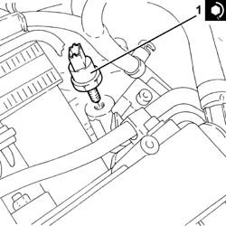
Applies to: engines: 2.0 JTS, 2.0 JTS; all production periods
1. Refit the O-Ring in its seating.
2. Refit the throttle body integrated with D.V.L. (2a) and secure it with the bolts (2b) to the specified torque.
| Fastening | Component | Ø | Value (daNm) |
|---|---|---|---|---|
2b | Bolt | BUTTERFLY CASING | M6 | (Modular intake manifold side) 0.8 ÷ 1.0 |
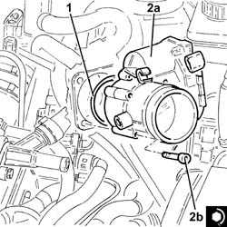
Applies to: engines: 2.0 JTS, 2.0 JTS; all production periods
Connect the vacuum pipe to the modular inlet manifold and tighten the band.
Connect the oil vapour recirculation pipe to the modular inlet manifold and tighten the band.
Place the coolant return pipe to the engine cooling system reservoir back in its housing and secure it to the modular inlet manifold.
Connect the flexible section to the rigid section of the coolant return pipe to the coolant reservoir and do up the band.
Refit in its seating the power steering fluid reservoir and secure it with its bolts.
Fit the air flow switching device actuator in its seating and secure it using the bolts.
Connect the linkage for the air flow switching control actuator.
Connect the air flow switching control actuator vacuum intake pipe and fasten it.
Connect the rapid attachment for the fuel vapour recovery pipe.
Connect the rapid attachment for the fuel supply pipe and secure it to the modular inlet manifold.
Connect the engine wiring electrical connections.
Connect the electrical connection for the cam angle sensor.
Connect the electrical connection from the enablement solenoid of the changeover device actuator.
Connect the electrical connection to the variable valve timing electro-magnet.
Connect the electrical connection to the fuel pressure sensor.
Connect the electrical connection to the fuel pressure regulator.
Connect the electrical connection to the throttle body integrated with D.V.L. and secure the electrical wiring to the band.
Place the rigid pipe complete with corrugated air intake hose from air filter to throttle body and tighten the relevant bands.
Connect the vacuum pipe to the corrugated hose and tighten the band.
Connect the oil vapour recirculation pipe to the tappet cover and secure with a band.
Proceed with refitting 5530B10 battery - r+r .
Place the modular intake manifold mounting bracket back in its housing and secure it using the bolts. Then secure the electrical wiring to the bands.
Proceed with refitting 1016A40 ignition coil cover on cylinder head- r+r .
Proceed with refitting 1076B18 rigid section of exhaust pipe between catalytic converter and silencer - r + r .
Proceed with refitting 7055B54 under-engine guard - r r .
Connect the negative (-) battery terminal.
Remove the car from the ramps.
Topics linked from this page (24)
- 1016A40 ignition coil cover on cylinder head- r+r
- 1048A34 sleeve(s) from flow meter to air supply capacity case - r + r
- 1056B81 run electronic ignition/injection control unit (single) self-learning procedure
- 1068A30 accelerator control cable - r + r
- 1076B18 rigid section of exhaust pipe between catalytic converter and silencer - r + r
- 1076B50 exhaust pipe attachment to engine - r + r
- 5530B10 battery - r+r
- 7055B54 under-engine guard - r r
- A1B Battery ( BATTERY NEGATIVE )
- D4 Front/engine connection
- D4A Front/engine connection ( ENGINE )
- D4B Front/engine connection ( ENGINE )
- K40 Lambda sensor
- K46 Rpm sensor
- K47 Timing sensor
- K50 Detonation sensor - 1
- K83 Fuel pressure sensor
- L10 Fuel vapour recovery solenoid
- L15 Variable geometry control solenoid
- M10A Engine management ECU ( ENGINE )
- M10B Engine management ECU ( ENGINE )
- N75 Throttle body actuator
- N76 Timing variator actuator
- N77 Fuel pressure regulator
Topics that link to this page (16)
- 1016C10 cylinder head - r + r and replace gasket
- 1056F60 SINGLE FUEL MANIFOLD PIPE, complete with injectors - R.R.
- 1068A31 accelerator cable - r r for rh drive versions
- 1072B10 inlet manifold - r + r and replace seal
- 1072B50 sleeves connecting air capacity box to inlet manifold is - r+r
- 1072D14 sleeves joining long air intake ducts to manifold case - replace with modular manifold removed
- 1080E28 enablement solenoid for flow of fuel vapour to inlet - r+r
- 1080E63 Fuel vapour PIPE from INTERMEDIATE COUPLING to fuel vapour SOLENOID VALVE - R.R.
- 1820B21 (Pump) - MASTER CYLINER R.R. for right hand drive versions
- 1820B43 RIGID PIPE from clutch reservoir to (pump) - master cylinder R.R. for right hand drive versions
- 1820B47 rigid pipe from master cylinder (pump) to vibration damper - r r for right hand drive versions
- 3330C38 FLEXIBLE PIPE - FRONT section - from brake fluid RESERVOIR to (pump) - MASTER CYLINDER R.R. for right hand drive versions
- 3330C39 FLEXIBLE PIPE - REAR section - from brake fluid RESERVOIR to (pump) - MASTER CYLINDER R.R. on right hand drive versions
- 3330D11 brake servo - r r including seperation from master cylinder - facia lining removed for rhd version
- 3330D27 vacuum pipe complete with one-way valves - r r for right hand drive versions
- 3340B53 rigid pipe (one) from master cylinder (pump) to abs hydraulic control unit - r r for rhd versions